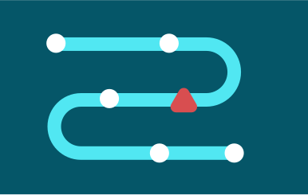

Good data
Better data. Smarter policy. Real-world results. Good Data helps the Government of Canada respond faster, deliver better, and make more confident decisions. We collect, analyze, and share data that’s practical, timely, and built for impact.

Overview
-
What are Good data?
Good Data is information that is:
- Collected for a clear purpose: we only gather what we need to answer important public‑interest questions.
- Connected: different datasets are linked so we see the full picture of people, places, and programs.
- Easy to understand: organised so anyone can spot what’s happening, why it’s happening, and who is affected.
- Respectful and secure: protected by strong privacy rules and mindful of Indigenous data rights.
Whether the process is internal or public-facing, existing or prospective, we work with our partners to find solutions that are grounded in evidence, and shaped by real-world feedback.
 -
Why it matters
When government has access to clear, trustworthy data, it can:
- Respond to crises, fast: We produce insights within weeks, not months.
- Target support where it’s needed most: By understanding who’s helped and who’s being missed.
- Make smarter choices: Weighing costs and benefits instead of guessing.
- Fix problems early: By spotting shifts in public needs in near real-time.
- Challenge old assumptions: Bringing new insight to entrenched problems.
- Earn public trust: By being open about what we measure and how it shapes decisions.
-
What we do
We use a range of advanced, practical methods to generate customized, high-quality data on how Canadians respond to policies, programs, and pressing issues. Our work helps decision-makers act faster, more effectively, and with greater confidence.
Segmentation
There is no average Canadian. Understanding differences is essential to designing effective, inclusive policies. We use advanced, data-driven segmentation to:
- Understand the diversity of Canadian attitudes and behaviours on key issues
- Anticipate how different groups might respond to new policies or services
- Help government tailor and target programs to meet the population’s varied needs
Policy trade-offs
Governments must make hard choices, especially when resources are tight. We run structured trade-off exercises to:
- Reveal what matters most to Canadians right now
- Understand what people are willing to prioritize when options are limited
- Support decision-making in fast-changing or fiscally-constrained environments
Discrete Choice Experiments (DCEs)
When preferences aren’t obvious, we simulate real-world decisions. We use discrete choice experiments to:
- Quantify Canadian preferences for features of future policies and programs
- Fill gaps where real-world behavioural data doesn’t yet exist
- Explore how Canadians might weigh competing options under uncertainty
A/B Testing
We can’t try everything, but we can test what works best. We run multi-arm A/B tests (rapid randomized trials) to:
- Compare multiple solutions to policy or service challenges
- Identify what works best, for whom, and under what conditions
- Produce fast, actionable evidence—especially when only one solution can move forward
Field Trials
Even great ideas can fail in practice—unless we test them. We run randomized controlled field trials to:
- Measure the real-world impact of new tools, services, or policy approaches
- Generate definitive data on what works, why, and at what cost
- Deliver high-confidence insights before full-scale implementation
Data Integration
Good decisions depend on the full picture. We integrate and link data sources to:
- Complement existing holdings with up-to-date, high-quality data
- See across silos—connecting people, programs, and outcomes
- Make insights easier to uncover, use, and share across government
-
How we work
We follow a five-phase approach that’s flexible and collaborative. Each project is shaped by the specific context and goals of the partner.
-
1 Identify
We start by defining the process and setting the scope for the audit. This includes:
- Clarifying the beginning and end points of the process
- Identifying key people involved (staff, service users, etc.)
- Reviewing existing documentation and data
- Forming a working group to guide the audit
-
2 Understand
Next, we collect information to better understand how the process works in practice—and where the biggest burdens are. We look at:
- Step-by-step experience from both user and employee perspectives
- How long each step takes to complete
- How easy or difficult steps are for users
- The costs involved, including time and effort
- Where and why delays, confusion, or drop-offs happen
We also examine how the process affects different groups, to ensure that proposed improvements support equity and inclusion.
-
3 Design
Based on the findings, we work with our partners to develop practical ways to reduce sludge. This might include:
- Rewriting confusing language
- Reordering steps to make them more logical
- Removing unnecessary actions, approvals or touchpoints to complete
- Creating clear guidance or support tools
We focus on changes that are easy to implement and make a meaningful difference.
-
4 Test
Where possible, we help implement the proposed changes and assess their impacts. We recommend testing the changes before implementing them at scale so our partners can develop confidence in the changes and ensure they meet users’ needs.
-
5 Scale
Once solutions are tested and refined, we can support implementation. We also assist in sharing lessons learned to inform broader changes, and to future improvements across government.
-


Publications
Work with us
Good Data cuts through red tape and confusion. If you’re facing a tough policy question, an unclear process, or scattered information, let’s talk. We’ll help turn raw numbers into clear insights—and clear insights into better outcomes for everyone in Canada.
Work with us